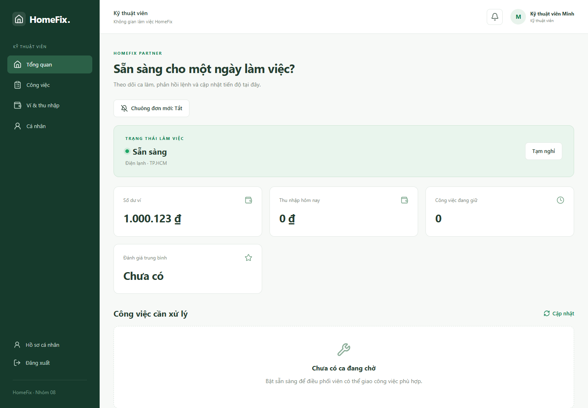

Kỹ thuật viên: nhận việc và nghiệm thu
- Bật Sẵn sàng nhận việc khi có thể nhận ca; kiểm tra hồ sơ, khu vực và ví.
- Mở đơn được giao và chọn Chấp nhận đơn → Xác nhận nhận đơn trước khi lệnh hết hiệu lực.
- Lần lượt chọn Bắt đầu di chuyển, Xác nhận đã đến nơi và Bắt đầu xử lý đúng tình trạng thực tế.
- Nếu cần vật tư, chọn Đề xuất vật tư, điền tên, số lượng, đơn giá, bảo hành và ghi chú; gửi khách hàng duyệt. Chờ khách chấp nhận chi phí.
- Chọn Hoàn thành · Lập phiếu nghiệm thu. Nhập nguyên nhân, biện pháp, ảnh; vẽ/lưu chữ ký KTV; Xem lại phiếu rồi Gửi phiếu nghiệm thu.
- Chờ khách nghiệm thu. Nếu khách từ chối, đọc lý do và xử lý tiếp.
- Với COD, chỉ chọn Xác nhận đã thu COD sau khi thực nhận đủ tiền và kiểm tra số tiền trên biểu mẫu.


Trang công việc kỹ thuật viên — bấm ảnh để xem kích thước gốc.
Không dùng chữ ký của mình ở ô chữ ký khách. Không tự nhận tiền chuyển khoản là đã xác minh: kế toán xử lý nghiệp vụ ngân hàng. Chữ ký và ảnh là chứng từ có quyền truy cập theo đơn.